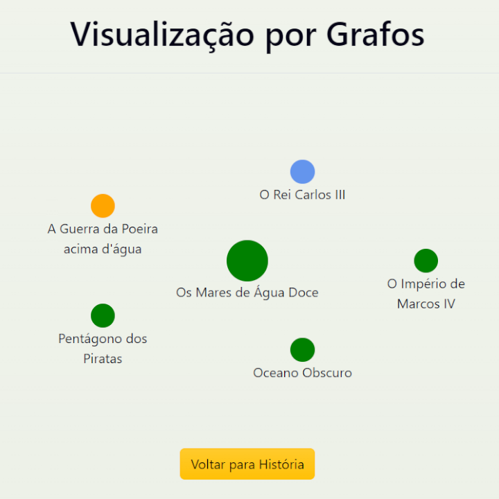
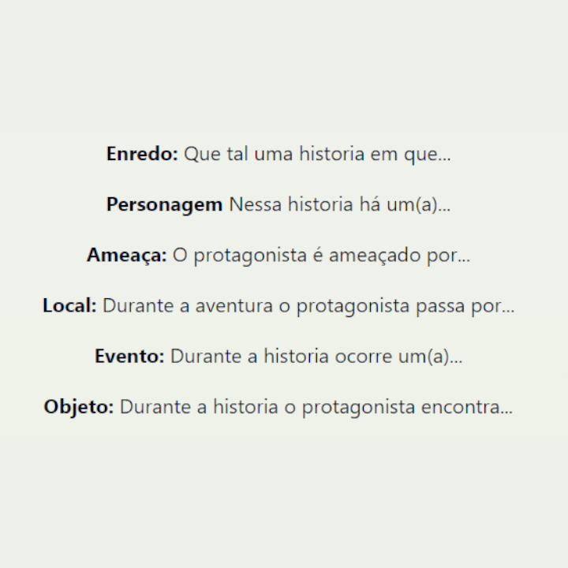
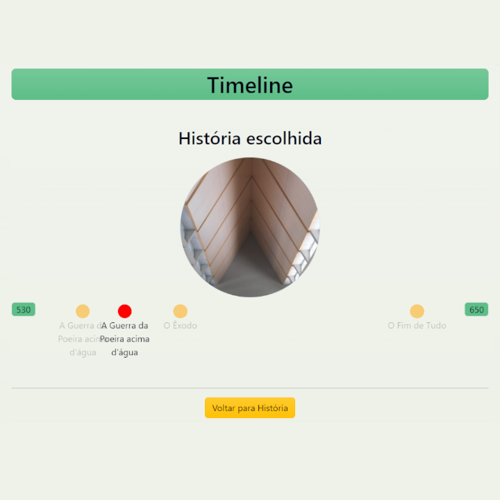

Bem vindo(a) de volta
Faça login para continuar.
Mais do que um simples editor de texto
Gostaria de poder ver o seu trabalho em outra perspectiva ou não sabe o que escrever?
O StoryArc é capaz de te mostrar as suas historias e todos os seus eventos, personagens e locais na forma de grafos e em uma "timeline" além de te ajudar a escrever suas historias e ter aquela inspiração que faltaGrafos
Os grafos são uma boa maneira de visualizar todos os personagens, eventos e locais relacionados á uma certa historia, personagem, evento ou local
Inspiração e referências
A pagina de referências está recheada de sites , vídeos e ferramentas para te ajudar a começar ou encontrar um novo caminho para usa história.
 VisualizarTimeline
A timeline ou linha do tempo é uma boa maneira de visualizar todos os acontecimentos de uma historia na ordem cronologica em que eles acontecem.
